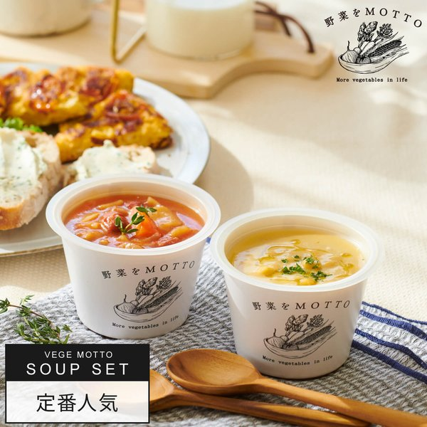
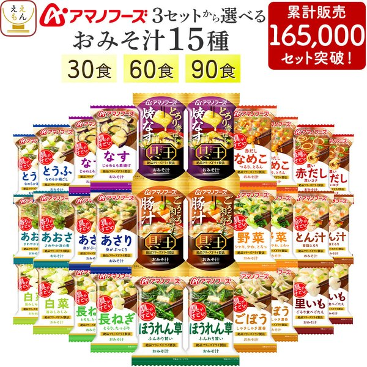
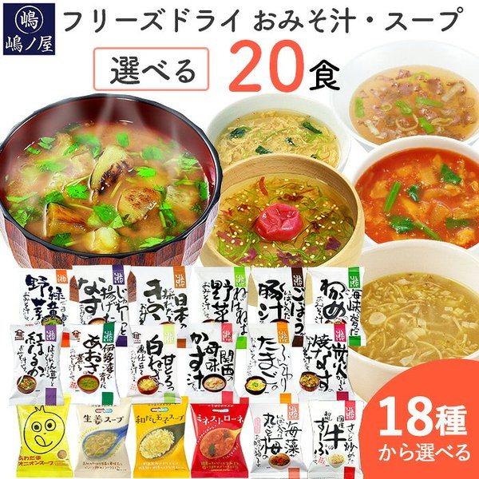
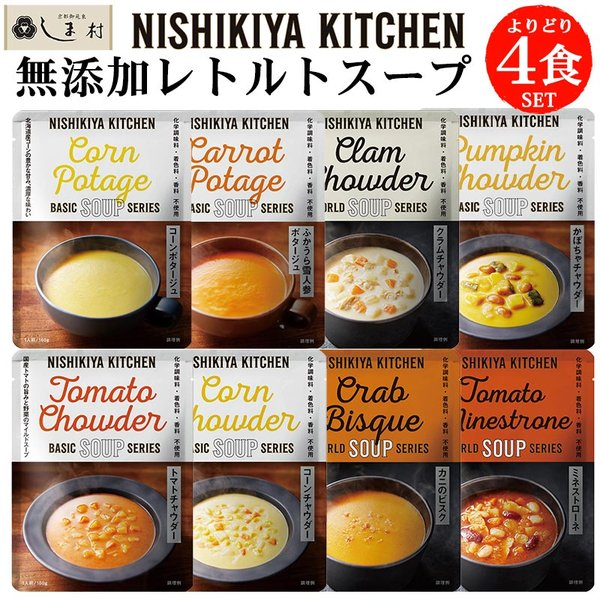
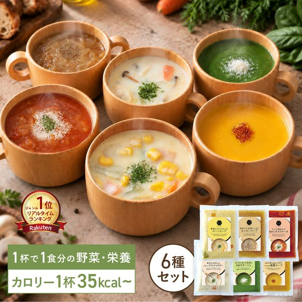
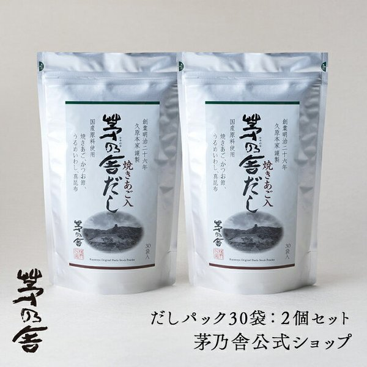
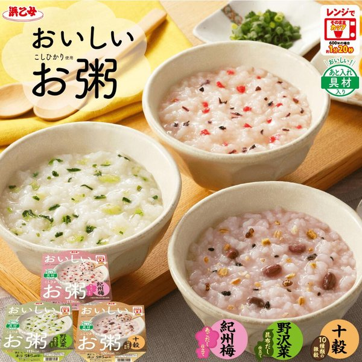
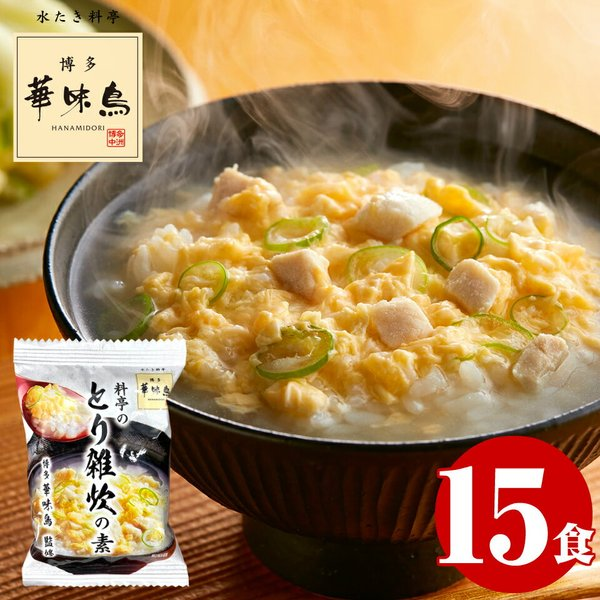
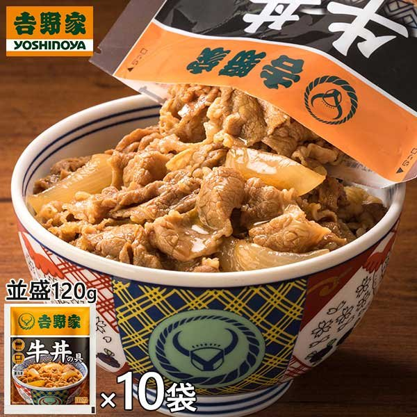
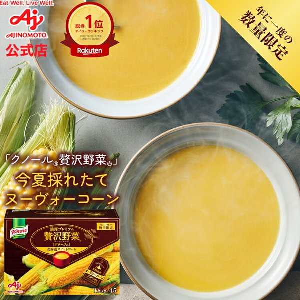

【2026年冬】忙しい日の救世主！無添加スープ・お味噌汁＆レトルトの時短ストック飯おすすめ10選
冬の平日は、帰宅してから食事を作るまでの体力が残っていないことがあります。そんな日にコンビニに走る回数が増えると、食費も体調も崩れやすくなります。そこで効くのが、常温で置けて、お湯かレンジだけで1食になるストックです。
選ぶ軸は、手間が1ステップか、常温で置けるか、1食あたりの満足度の3つ。お湯を注ぐだけのフリーズドライは最短で、レトルトは具がしっかり入るぶん満足度が上がります。味噌汁とスープを両方入れておくと、和洋どちらの気分にも合わせられます。だしパックを1つ足しておくと、味噌汁も鍋も同じ土台で作れるようになります。
本記事では、楽天市場で人気・高評価の無添加スープ・お味噌汁＆レトルトの時短ストック飯10選を、実売価格とレビュー評価つきで写真付き紹介します。
- おすすめ10選 スペック・特徴比較表
- BEST 1｜野菜をMOTTO レンジで1分 カップスープ 6個セット（おまかせ）
- BEST 2｜アマノフーズ フリーズドライ 味噌汁 15種（30食・60食・90食）
- BEST 3｜コスモス食品 味噌汁とスープ 選べる20食セット（フリーズドライ）
- BEST 4｜にしきや 無添加 レトルトスープ 選べる4種セット
- BEST 5｜JUNOS CAFE スープ6種セット（200g・レトルト）
- BEST 6｜茅乃舎だし だしパック30袋 2個セット
- BEST 7｜浜乙女 カップ粥（十穀・雑穀・梅・野沢菜・白がゆ）
- BEST 8｜博多華味鳥 フリーズドライ雑炊の素 15食
- BEST 9｜吉野家 牛丼の具 120g×10袋
- BEST 10｜クノール 贅沢野菜 北海道スイートコーン 15袋
- 【読者負担0円】買わなくても得する無料サービス
- まとめ：時短ストック飯10選の選び方
| 順位 | 商品名 | ブランド | 最大の特徴・おすすめ理由 | 総合評価 |
|---|---|---|---|---|
| BEST 1 | 野菜をMOTTO レンジで1分 カップスープ 6個セット（おまかせ） | 野菜をMOTTO | レンジ1分で食べられる | 4.54 |
| BEST 2 | アマノフーズ フリーズドライ 味噌汁 15種（30食・60食・90食） | アマノフーズ | 15種の具で毎日飽きない | 4.79 |
| BEST 3 | コスモス食品 味噌汁とスープ 選べる20食セット（フリーズドライ） | コスモス食品 | 味噌汁と洋風スープの両方入り | 4.82 |
| BEST 4 | にしきや 無添加 レトルトスープ 選べる4種セット | にしきや（NISHIKIYA KITCHEN） | 無添加のレトルトスープ | 4.69 |
| BEST 5 | JUNOS CAFE スープ6種セット（200g・レトルト） | JUNOS CAFE | 6種のスープを食べ比べできる | 4.98 |
| BEST 6 | 茅乃舎だし だしパック30袋 2個セット | 久原本家 茅乃舎 | 袋のまま煮出すだけ | 4.83 |
| BEST 7 | 浜乙女 カップ粥（十穀・雑穀・梅・野沢菜・白がゆ） | 浜乙女 | お湯を注ぐだけ | 4.96 |
| BEST 8 | 博多華味鳥 フリーズドライ雑炊の素 15食 | 博多華味鳥 | 鶏の旨みが効いた雑炊 | 4.61 |
| BEST 9 | 吉野家 牛丼の具 120g×10袋 | 吉野家 | 袋のまま温めてご飯にのせるだけ | 4.53 |
| BEST 10 | クノール 贅沢野菜 北海道スイートコーン 15袋 | 味の素 クノール | お湯を注ぐだけ | 4.55 |
野菜をMOTTO レンジで1分 カップスープ 6個セット（おまかせ）

電子レンジで1分温めるだけで食べられるカップスープ。具材の入ったスープがカップに入っていて、お湯を沸かす必要がありません。6個セットで、内容はおまかせなので、届いてからの楽しみがあります。常温で長期保存でき、ストックしておけば、食欲がない日の1食や、あと1品ほしい夜に使えます。楽天市場での実売価格は約4,880円（2026年11月時点）。
- レンジ1分で食べられる
- 常温で長期保存できる
- レビュー869件・評価4.54
- 内容がおまかせなので、苦手な味が入る可能性がある
アマノフーズ フリーズドライ 味噌汁 15種（30食・60食・90食）

フリーズドライの味噌汁を15種類そろえた詰め合わせ。お湯を注いで1分待つだけで、なす・あさり・なめこなど、具がしっかり入った味噌汁ができあがります。30食・60食・90食から選べ、箱のまま収納できるので、毎日の1杯を切らさずに済みます。化学調味料を使っていないタイプです。楽天市場での実売価格は約3,980円（2026年11月時点）。
- 15種の具で毎日飽きない
- お湯を注ぐだけの1分
- レビュー1,006件・評価4.79
- 1食あたりの単価は、袋の味噌より高くなる
コスモス食品 味噌汁とスープ 選べる20食セット（フリーズドライ）

フリーズドライの味噌汁とスープを20食まとめたセット。和風の味噌汁と洋風のスープが混ざっているので、朝は味噌汁、夜はスープと使い分けられます。化学調味料無添加で、お湯を注ぐだけでできあがります。20食あると、2〜3週間分の「あと1品」を確保できます。楽天市場での実売価格は約3,790円（2026年11月時点）。
- 味噌汁と洋風スープの両方入り
- 化学調味料無添加
- レビュー156件・評価4.82
- 種類が多いぶん、好みの味に偏りが出る
にしきや 無添加 レトルトスープ 選べる4種セット

無添加のレトルトスープを4種から選べるセット。コーンポタージュやクラムチャウダー、トマト系など、具材の入ったスープが袋に入っています。湯煎かレンジで温めるだけで、パンと合わせれば朝食になり、ご飯にかければ雑炊風にもできます。添加物を抑えた味付けで、子どもにも出しやすいです。楽天市場での実売価格は約2,000円（2026年11月時点）。
- 無添加のレトルトスープ
- 4種から選べる
- レビュー61件・評価4.69
- レビューはまだ61件で、口コミはこれから増える段階
JUNOS CAFE スープ6種セット（200g・レトルト）

カフェビストロの手作りスープを6種類そろえたセット。ミネストローネ、クラムチャウダー、コーンスープ、栄養ポタージュなど、味の方向が違うスープが1袋200gずつ入っています。1杯で1食分の野菜が取れる設計で、レンジで温めるだけで食べられます。1杯35kcalからと軽いので、夜食にも向いています。楽天市場での実売価格は約3,960円（2026年11月時点）。
- 6種のスープを食べ比べできる
- 1杯で1食分の野菜
- レビュー53件・評価4.98
- レビューは53件とまだ少なめ
茅乃舎だし だしパック30袋 2個セット

茅乃舎のだしパックを2個セットでまとめた商品。焼きあごや昆布、かつお節などを合わせただしで、袋のまま鍋に入れて煮出すだけで本格的なだしが取れます。味噌汁やすまし汁はもちろん、煮物や炊き込みご飯にも使えます。30袋入りが2個なので、毎日使っても2ヶ月ほどもちます。楽天市場での実売価格は約4,755円（2026年11月時点）。
- 袋のまま煮出すだけ
- 味噌汁以外の料理にも使える
- レビュー161件・評価4.83
- 煮出したあとの袋は、破って中身を料理に使うこともできる
浜乙女 カップ粥（十穀・雑穀・梅・野沢菜・白がゆ）

お湯を注ぐだけで食べられるカップタイプのお粥。十穀や野沢菜、梅など、味の違う種類がそろっています。1個から買えるので、まず試して気に入った味を箱で追加する使い方ができます。食欲がない日の朝や、夜遅くに軽く済ませたいときに、鍋を出さずに済みます。楽天市場での実売価格は約324円（2026年11月時点）。
- お湯を注ぐだけ
- 十穀・雑穀・梅など種類が豊富
- レビュー52件・評価4.96
- レビューは52件と多くはなく、1個単位の購入が基本
博多華味鳥 フリーズドライ雑炊の素 15食

博多華味鳥の水炊きスープを使った、フリーズドライの雑炊の素。お湯を注いでご飯を加えるだけで、鶏の旨みが効いた雑炊ができます。15食入りなので、風邪気味の日や、胃に負担をかけたくない日の食事としてストックできます。レトルトの雑炊より軽く、場所を取りません。楽天市場での実売価格は約2,490円（2026年11月時点）。
- 鶏の旨みが効いた雑炊
- 15食入りのストック
- レビュー51件・評価4.61
- ご飯を別に用意する必要がある
吉野家 牛丼の具 120g×10袋

吉野家の牛丼の具を、レトルトパウチで10袋まとめたセット。袋のまま温めてご飯にのせるだけで、店の牛丼に近い味が家で食べられます。1袋120gはちょうど1杯分で、丼のほか、うどんにのせたり、卵とじにしたりと使い道があります。10袋あると、疲れて料理をする気力がない日の主食になります。楽天市場での実売価格は約3,990円（2026年11月時点）。
- 袋のまま温めてご飯にのせるだけ
- 10袋入りのストック
- レビュー540件・評価4.53
- 味付けは濃いめなので、ご飯の量はやや多めが合う
クノール 贅沢野菜 北海道スイートコーン 15袋

北海道産スイートコーンを使った、粉末タイプのコーンスープ。お湯を注いで混ぜるだけで、粒の食感が残るコーンスープができます。15袋入りで、朝食の1品や、小腹が空いたときの飲み物として使えます。カップ麺のお湯を沸かすついでに作れる手軽さがあります。楽天市場での実売価格は約4,244円（2026年11月時点）。
- お湯を注ぐだけ
- 北海道産スイートコーン使用
- レビュー396件・評価4.55
- 粉末なので、ダマにならないよう先にお湯を少量入れて混ぜる
この記事の商品を買う前に、まずは無料で得する選択肢をチェック。どれも登録・利用は0円で、無料期間中に解約すれば料金はかかりません。読みたい雑誌がある人、ポイントを貯めたい人、アンケートなら気軽という人、それぞれに合うものを選べます。
初回31日無料・無料期間中に解約すれば0円 → 楽天ポイントモール｜登録無料で毎日ポイ活
買い物なしでもポイントが貯まる無料サービス → 楽天インサイト｜アンケートに答えてポイント
登録無料・すきま時間のアンケートで貯まる → 楽天カード｜年会費永年無料
新規発行・年会費ずっと0円 →
4つのサービスの違いと使い分けは「出費0円で得する！買わずにポイントが貯まる無料サービス厳選4選」でまとめています。
💡 まとめ：時短ストック飯10選の選び方
忙しい日の食事は、作る気力を前提にしないほうが安定します。お湯を注ぐだけの味噌汁やスープを引き出しに、レンジで温めるレトルトを1段に、そして雑炊や丼の具をご飯のそばに置いておく。この配置にしておくと、帰宅後5分で温かい1食が完成します。味噌汁とスープの詰め合わせは種類が多いぶん飽きにくく、だしパックがあれば野菜を足して鍋にも広げられます。ストックは切らしてから買うと高いものを買いがちなので、残り1/3で買い足すのがおすすめです。
楽天市場では「5と0のつく日」や「お買い物マラソン」などのキャンペーンに合わせて購入すると、ポイント還元が最大化してお得に手に入ります。ぜひチェックしてみてくださいね。